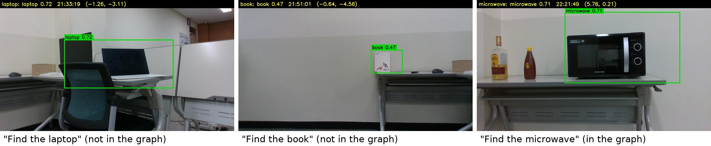
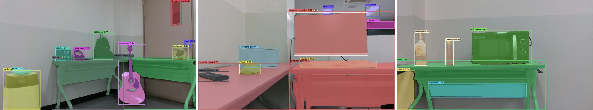
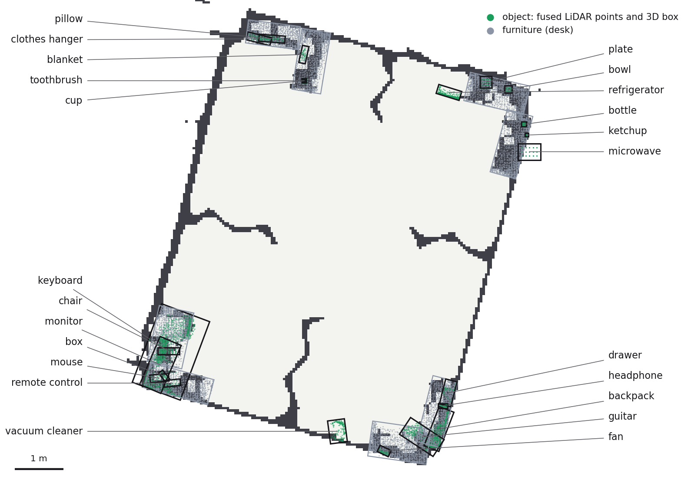
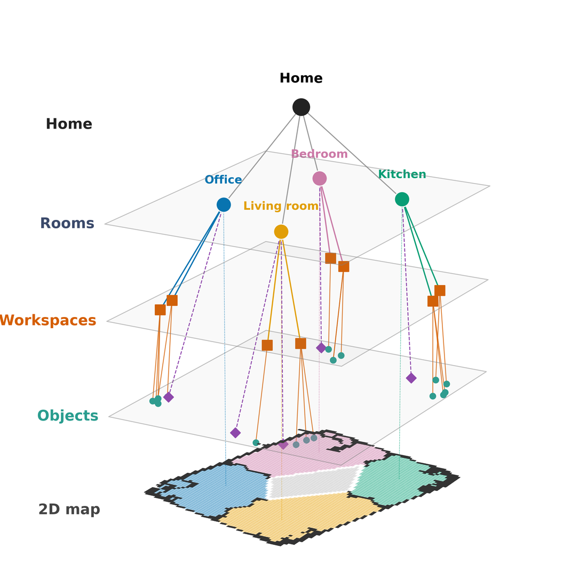
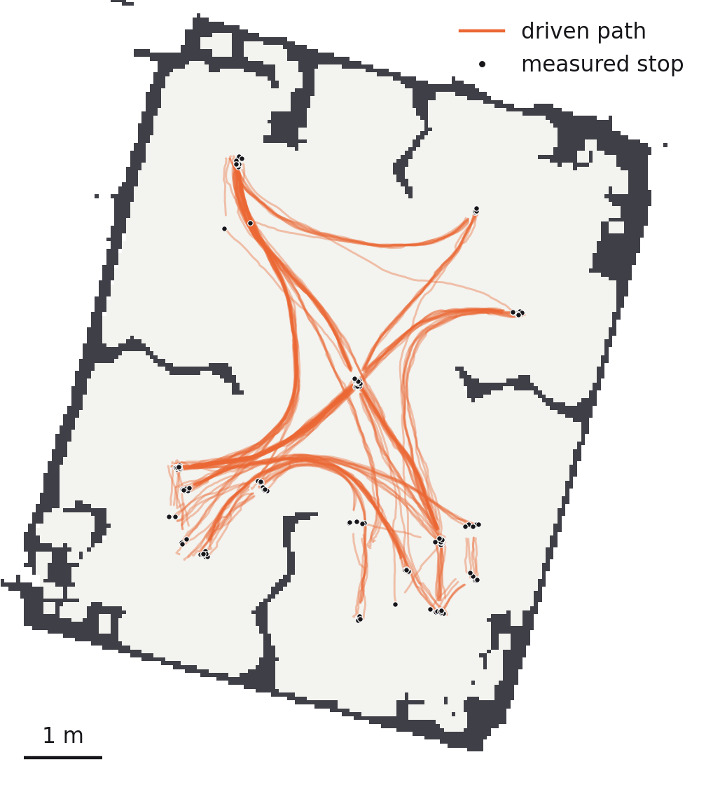

Ask the robot to “find the laptop”. If the laptop is not in its map, it has to guess where one would be, go and look, and guess again. AtHOME turns the home into a hierarchical scene graph (Room → Workspace → Object), and a 4B-parameter LLM distilled with GPT-4.1 as the teacher picks the next place to look in under a second.

Real robot, 20 placements of objects not in the map. Both planners found 19 of 20.
How it works
The home is mapped once: one drive becomes a 3D object map, and the map becomes a scene graph. After that, every request runs the same loop.
- SearchChoose a place
The small LLM picks a room, then a place in it.
- MotionDrive and stop
MPPI control to a viewpoint, with a measured stop.
- MotionLook around
In-place turns, the camera still for each photo.
- PerceptionDetect
Each photo becomes named objects with 3D positions.
- SearchFound?
If found, it reports with a photo; otherwise, it chooses again.
TidyBot++ holonomic base · Livox Mid-360 LiDAR · RealSense D435 · laptop with an RTX 4060 · detection and the LLM on GPU servers · ROS 2 Humble
Perception & mapping
Donggeon Yoon
One drive through the home becomes the 3D object map on which all other modules depend. During a search, the same detectors tell the robot what it is looking at.


Detect on keyframes
RAM names what is in the photo, GroundingDINO boxes it, SAM generates the mask and CLIP describes it (the ConceptGraphs chain). The whole chain fits in 5.4 GB of GPU memory.
Fuse with LiDAR
LiDAR points inside a mask give the 3D position, with the depth camera as backup. A detection that looks like a mapped object and overlaps it is merged into it.
Faster when searching
The target has a name, so the tagging model is skipped: from 3–4 s to about 1.1 s per photo (measured by the perception module), with better recall of the exact name.
Scene graph & search
Seongmin Lee
The scene graph gives the object map a structure, and that structure is what lets a small model do the planning.

Scene graph
Rooms come from the wall map and door lines. Furniture that holds objects becomes a Workspace. A workspace or a floor object is a Search Location: what the planner chooses and the robot visits.
Search loop
Known object: go to its furniture. Unknown: the planner picks a room, then a Search Location, from what was already seen and the travel cost.
Small planner
GPT-4.1 labels choices in HM3D-Sem homes; Qwen3-4B learns them with LoRA, and the Workspace step is further tuned with GRPO. It decides in 0.65 s (median) instead of 2.61 s.
Motion
Sanghun Moon
Every “go and look” is a goal pose. An MPPI controller written for the holonomic base drives there and reports success only after the robot has measurably stopped.

MPPI for this base
Ten times a second the controller samples 512 velocity sequences 2.5 s ahead and blends them into one command, in about 10 ms. Some samples already follow the Nav2 path (Biased-MPPI).
A stop that is measured
Perception needs a still camera. A goal succeeds only after the measured speed stays under 0.02 m/s, and a failed goal says why, so the search can retry or look elsewhere.
The robot's real footprint
The costmap uses the measured 50 × 54 cm footprint instead of a 0.37 m circle, which allows the robot to pass through doorways and gaps between furniture: search success in our simulated homes goes from 65.5% to 92.7%.
Results
20 pre-registered placements on the real robot, each searched once by the trained planner and once by the untrained Qwen3-4B.
Replay a search
The planner picks a room, then a place in it. Places already checked are shown in grey; the dashed outline is where the object really was. Under each graph, the recording of the same real run plays in step with it (8× speed; the clock on the video is real time).
Four example placements are shown; all 20 are in the chart below.
Loading…
Loading…
- candidates
- chosen
- visiting
- looked, not there
- found
- where the object was
In the graphs, a name like “desk 3” is the furniture type and the ID it got while the map was built: detections of one object are merged under one ID, so the numbers have gaps and no other meaning.
Placement by placement
Places visited before the object was found. Rows marked ▶ replay above, with the recording, when selected.
- trained planner
- untrained Qwen3-4B
- not found
- numbers: trained / untrained
Fewer visits in 14 placements, the same in 2, more in 4 (Wilcoxon p = 0.027). Neither planner's one failure came from where it chose to look.
Simulation and the real robot agree
| Simulation · 1,495 episodes | Real robot · 20 placements | |||
|---|---|---|---|---|
| untrained | trained | untrained | trained | |
| Success | 99.5% | 100% | 95% | 95% |
| SPL ↑ | 0.410 | 0.470 | 0.395 | 0.465 |
| Visits ↓ (mean) | 5.98 | 3.36 | 5.10 | 3.00 |
About 0.6× the visits and +0.06–0.07 SPL in both, at the same success.
The structure keeps the planner small
The same untrained Qwen3-4B, given the home three ways (simulation, 1,226 episodes on held-out HM3D buildings):
| Home given as | Success ↑ | SPL ↑ | Visits ↓ | Prompt tokens / episode ↓ |
|---|---|---|---|---|
| Hierarchical scene graph (ours) | 0.994 | 0.432 | 8.2 | 6,200 |
| Without the workspace layer | 0.977 | 0.421 | 11.3 | 13,546 |
| Flat object list | 0.940 | 0.383 | 13.9 | ≥ 33,983 |
Limitations
- One real home and three kinds of objects: enough to show fewer visits, not to separate success rates.
- The map is built before the search; furniture is assumed fixed.
- Detection is an untrained open-vocabulary model: dim light and very small objects cause misses.
- The stop check could not confirm a stop 10 times in 960 motion goals, all in one room; a repeated request cleared 9 of them, and one ended a run.